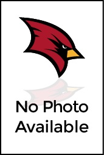

CSIS @ SVSU
Computer Science & Information Systems (CSIS)
The Computer Science program and Computer Information Systems program share many of the same core classes to ensure that students are adequately prepared with the necessary background for their upper class studies. This common core includes programming both in a Windows graphical environment as well as in a UNIX command-line environment. Industry uses both operating systems and so the Department wants students to be well versed in each area. Additionally, students will learn C++ and Microsoft Visual Basic as toolsets to develop applications. The common core also includes introductory data structures, statistics with computer applications, web client development and web server development. Both majors are heavily programming-oriented. The curriculum has been designed this way on purpose so that students can learn about a concept and then use their programming knowledge as a vehicle to understand, experiment and implement that topic. Both programs do a great job in preparing students for their future in industry or to pursue a graduate degree
CSIS About Us
About CSIS @ SVSU
Why Choose SVSU for CSIS:
1) Quality Instruction
Faculty have the necessary education and experience to bring real world knowledge into their classrooms. SVSU prides itself on being a teaching
institution and the Department continually strives to provide the best instruction on campus. Our programs and our curriculum are continually
evaluated and change as the computing field and industry evolve. We put a lot of effort into trying to keep our programs as up-to-date as possible
and bring in new technology wherever we can.
2) Capstone Projects
How would you like to work on a real-world project while still an undergraduate? That’s exactly what the capstone projects in each major do.
When you are a senior you’ll find out what it’s really like to be in industry because you’ll be building up a large scale system under the
guidance of a CSIS faculty member. Few other institutions afford their students this unique learning opportunity.
3) Use of the Latest Software
The Department provides hands-on instruction using the latest and most popular software packages available, including both open source
and commercial systems such as Visual Studio, PHP, C++, Linux, Windows, IIS, Apache, Microsoft Project, Visio, mySQL, Oracle, SQL Server,
Expression Studio and DreamWeaver.
4) Free Student Access to Software
The CSIS Department uses open source software where applicable and students may freely download the same software for their personal computers.
The Department also participates in the Microsoft Academic Alliance which means that students have free access to the same applications,
development tools, operating systems and server software for their personal computers as that used in classes and labs.
5) Networking with Industry
The Department maintains close ties to local industry. This means that CSIS students have the ability to land internships,
co-op positions and part-time employment in their field while still an undergraduate. In addition to a paycheck, the experience
this opportunity provides goes a long way toward landing that first job after graduation. Many employers also contact the Department
directly when they are looking to hire new recruits for full time positions.
Mission Statement
Our Mission
The mission of the Department of Computer Science and Information Systems at SVSU is to provide an outstanding
education to its students in accordance with the guidelines of the SVSU mission, to advance scholarship in the key domains of the
computing and information systems sciences, and to engage in activities that improve the welfare of society and enhance the reputation
of SVSU. The department will provide its students with balanced programs which emphasize:
- the knowledge of the core principles of computer science
- the skills necessary to use computers to solve real-world problems
- experience in implementing solutions with modern computing tools
- the communication skills necessary to work effectively in a team
- foster a high level of faculty/student interaction and mentoring
We expect CSIS students to be able to do the following at the end of their program:
- Solve problems by using skills in math, computer science, and technology
- Design, implement, document and maintain computer systems
- Communicate effectively both orally and in writing
- Understand professional, ethical, legal, security and social issues and responsibilities
- foster a high level of faculty/student interaction and mentoring
- Apply their knowledge and skills as they start their professional careers
- Work well both independently and collaboratively with diverse groups
- Generate new and creative ideas
At time of completion of their degree here at SVSU:
- Graduates shall demonstrate a thorough grounding in the fundamental principles and practices of computing and information systems, and those principles that underpin them
- Graduates shall demonstrate an understanding of the contexts in which computing is applied
- Graduates shall find employment in the computing profession and/or continue advanced studies in computer science or information systems
CIS Course Squence
CIS Course Squence
This chart gives you an idea what courses you should take in the 4 years you're here at SVSU. We highly recommend to talk one-on-one with a faculty member, to make sure you're on track!
| 1st Year |
|---|
| Gen Eds |
| MATH 103 |
| General Requirements |
| COMM 105 |
| MATH 120B |
| PHIL 205A or PHIL 210B |
| Core Requirements |
| CS 105 or CS 107 |
| CS 146 |
| CS 116 |
| Electives |
| 2nd Year |
|---|
| Gen Eds |
| General Requirements |
| CS 245 |
| RPW 304 |
| ACCT 213 |
| ECON 221 |
| Core Requirements |
| CS 216 |
| CIS 255 |
| CIS 311 |
| Electives |
| 3rd Year |
|---|
| Gen Eds |
| General Requirements(pick 2) |
| LAW 308, MGT 321, MKT 331 |
| Core Requirements |
| CIS 301 |
| CIS 333 |
| CIS 355 |
| CIS 366 |
| CIS 386 |
| Electives |
| CS 333 |
| CS 345 |
| CIS 357 |
| CIS 371 |
| CIS 490 |
| 4th Year |
|---|
| Gen Eds |
| General Requirements |
| Core Requirements |
| CIS 422 |
| CIS 424 |
| Electives |
| CIS 425 |
| CIS 486 |
| CIS 490 |
CS Course Squence
CS Course Squence

This chart gives you an idea what courses you should take in the 4 years you're here at SVSU. We highly recommend to talk one-on-one with a faculty member, to make sure you're on track!
| 1st Year |
|---|
| Gen Eds |
| MATH 103 |
| General Requirements |
| COMM 105A |
| MATH 161 |
| PHIL 205A or PHIL 210B |
| Core Requirements |
| CS 105 or CS 107 |
| CS 146 |
| CS 116 |
| Electives |
| 2nd Year |
|---|
| Gen Eds |
| General Requirements |
| CS 245 |
| MATH 162 |
| RPW 304 |
| Core Requirements |
| CS 216 |
| CIS 255 |
| CIS 311 |
| Electives |
| 3rd Year |
|---|
| Gen Eds |
| General Requirements |
| MATH 300 |
| Core Requirements |
| CS 316 |
| CIS 366 |
| CS 331 |
| CIS 355 |
| CS 411 |
| Electives |
| CS 345 |
| CIS 357 |
| CS 431 |
| CS 476 |
| CS 482 |
| CS 490 |
| 4th Year |
|---|
| Gen Eds |
| General Requirements |
| Core Requirements |
| CS 401 |
| CS 421 |
| CS 446 |
| CS 451 |
| Electives |
| CS 402 |
| CS 422 |
| CS 416 |
| CS 431 |
| CS 476 |
| CS 482 |
| CS 490 |
Career Opportunities
Career Opportunities

Where do our graduates go after graduation?
Some students go on to complete graduate work and earn master’s degrees and Ph.D.s. Our programs prepare
students for grad school if that’s what they are interested in. Many have pursued graduate degrees at
institutions in the state such as Michigan State University, Oakland University, The University of Michigan
and Central Michigan University. Others have gone on to schools in other states and done very well.
For the majority of our students, they decide to enter the workforce after graduation. Our name is recognized
as producing skilled employees…a fact that we are very proud of. In fact many local and regional employers return
to SVSU year after year to hire our Computer Science and Information System student graduates.
Our students have even successfully started their own companies right after graduating from SVSU!
Some will work for local companies such as:
- Saginaw Tooling Systems
- The Saginaw Intermediate School District
- SVSU
- Delta College
- Mahar Tools
- ...and many others
Regional employers attract others, like:
- Auto Owners Insurance
- Frankenmuth Mutual Insurance
- Covenant Healthcare
- Rehmann Group
- McLaren Health Care Corporation
- Ascension Health
- Yeo & Yeo
- ...among others
Others even make careers immediately at multinational corporations including:
- Dow Chemical
- IBM
- Dow Corning
- General Motors
- Electronic Data Systems
- KPMG
- Deloitte & Touche
- ...and yes, even Microsoft
Faculty
CSIS Faculty
Department Chair
 |
Il-Hyung ChoAssociate Professor of Computer Science & Information Systems Science East 178 989-964-2044 icho@svsu.edu |
College of Science Engineering & Technology
 |
Frank R HallDean of the College of Science Engineering & Technology Pioneer Hall 236B 989-964-4144 frhall@svsu.edu |
 |
Andrew M ChubbAssociate Dean of the College of Science Engineering & Technology Pioneer Hall 236 989-964-4144 achubb@svsu.edu |
CSIS Faculty
 |
Moe BidgoliAssociate Professor of Computer Science & Information Systems Science East 175 989-964-4198 bidgoli@svsu.edu |
 |
George P CorserAssistant Professor of Computer Science & Information Systems Science East 179 989-964-2756 gpcorser@svsu.edu |
 |
Poonam DharamAssistant Professor of Computer Science & Information Systems Science East 172 989-964-4191 pdharam@svsu.edu |
|  |
Scott D JamesProfessor of Computer Science & Information Systems Science East 176 989-964-4896 james@svsu.edu |
Aos MulahuwaishAssociate Professor of Computer Science & Information Systems Science East 174 989-964-4346 amulahuw@svsu.edu |
 |
Khandaker Abir RahmanAssistant Professor of Computer Science & Information Systems Science East 177 989-964-2528 krahman@svsu.edu |
CSIS Adjunct Faculty
 |
Richard V BeyersAdjunct Faculty 989-964-4050 rbeyers@svsu.edu |
Jesse J GrekowiczAdjunct Faculty 989-964-4050 jjgrekow@svsu.edu |
Kevin J HillakerAdjunct Faculty 989-964-4050 kjhillak@svsu.edu |
Steven J KriegAdjunct Faculty 989-964-4050 sjkrieg@svsu.edu |
Gregory R McNishAdjunct Faculty 989-964-4050 grmcnish@svsu.edu |
Godfrey NolanAdjunct Faculty 989-964-4050 gnolan@svsu.edu |
Nancy A SamolewskiAdjunct Faculty 989-964-4050 nas@svsu.edu |
Evelyn SchenkAdjunct Faculty 989-964-4050 eschenk@svsu.edu |
 |
Michael D StackhouseAdjunct Faculty 989-964-4050 mdstackh@svsu.edu |
Roger YerionAdjunct Faculty 989-964-4050 ryerion@svsu.edu |
Joan M ZitoAdjunct Faculty 989-964-4050 jmzito@svsu.edu |
College of Science, Engineering & Technology
College of Science, Engineering & Technology

A Message From The Dean
Welcome to the College of Science, Engineering & Technology at SVSU! We believe that SVSU
provides exceptional opportunities for students interested in the sciences, mathematics, engineering, or computer science.
We are proud of our many programs in these areas. Students who enroll in SVSU's science and engineering courses experience:
- Small classes taught by full-time faculty members or qualified adjunct faculty members
- New, well-equipped laboratories and classrooms
- Opportunities for hands-on operation of modern instrumentation and equipment
- Opportunities for independent research and engineering design projects
- Excellent advising and mentoring in preparation for advanced study in professional, medical or graduate programs
- Active student organizations in biology, chemistry, physics, math, computer science, health professions, engineering, Formula One racing, and robotics
- Attractive physical facilities
Our dedicated faculty and staff are committed to providing the highest quality undergraduate programs geared towards personalized attention and hands-on learning. Explore our programs and organizations using the links to the left.
Frank R. Hall, Ph.D.
Dean
College of Science, Engineering & Technology
Computer Information Systems
Computer Information Systems
The Computer Information Systems program and Computer Science program share many of the same core classes to ensure that students are
adequately prepared with the necessary background for their upper class studies. This common core includes programming both in a Windows
graphical environment as well as in a Unix command-line environment. Industry uses both operating systems and so the Department wants
students to be well versed in each area. Additionally, students will learn C++ and Microsoft Visual Basic as toolsets to develop applications.
The common core also includes introductory data structures, statistics with computer applications, web client development and web server development.
Both majors are heavily programming-oriented. The curriculum has been designed this way on purpose so that students can learn about a concept and
then use their programming knowledge as a vehicle to understand, experiment and implement that topic. Both programs do a great job in preparing
students for their future in industry or to pursue a graduate degree.
Computer Information Systems tends to be more application oriented than Computer Science and geared toward application development with some business
emphasis. Computer Information Systems majors will see the following in their degree program: Topical Coverage Synopsis: Models, technologies, systems
and E-business strategies that are crucial in today’s businesses.
Cutting-edge technology skills and knowledge:
- Application Areas: Data Communications, Database, e-Commerce, .NET development
- Technical Topics: system integration & management, systems design and analysis, enterprise database systems & transaction processing and much more
Why Study CSIS?
Why Study CSIS?

- Computing is part of everything we do!
- Computing and computer technology are part of just about everything that touches our lives from the cars we drive, to the movies we watch, to the ways businesses and governments deal with us. Understanding different dimensions of computing is part of the necessary skill set for an educated person in the 21st century. Whether you want to be a scientist, develop the latest killer application, or just know what it really means when someone says “the computer made a mistake”, studying computing will provide you with valuable knowledge.
- Expertise in computing enables you to solve complex, challenging problems.
- Computing is a discipline that offers rewarding and challenging possibilities for a wide range of people regardless of their range of interests. Computing requires and develops capabilities in solving deep, multidimensional problems requiring imagination and sensitivity to a variety of concerns.
- Computing enables you to make a positive difference in the world.
- Computing drives innovation in the sciences (human genome project, AIDS vaccine research, environmental monitoring and protection just to mention a few), and also in engineering, business, entertainment and education. If you want to make a positive difference in the world, study computing.
- Computing offers many types of lucrative careers.
- Computing jobs are among the highest paid and have the highest job satisfaction. Computing is very often associated with innovation, and developments in computing tend to drive it. This, in turn, is the key to national competitiveness. The possibilities for future developments are expected to be even greater than they have been in the past.
- Computing jobs are here to stay, regardless of where you are located.
- There actually are more computing jobs than qualified people to fill them in the United States. U.S. IT employment was 17% higher in 2004 than in 1999. The Bureau of Labor Statistics says computing has the greatest potential for new jobs through 2018. Yes, some IT jobs have gone overseas. If you consider the expected growth in computing, it’s easy to see that companies simply need more talent. Don’t miss out on pursuing the large number of open positions available right now,
- Expertise in computing helps you even if your primary career choice is something else.
- Having a computing major will provide you with a foundation of knowledge, problem solving and logical thinking that will serve as a competitive advantage to you in your career, in whatever field you choose.
- Computing offers great opportunities for true creativity and innovativeness.
- Creating high-quality computing solutions is a highly creative activity, and computing supports creative work in many other fields. The best solutions in computing exhibit high levels of elegance and beauty.
- Computing offers great opportunities for true creativity and innovativeness.
- Computing is often about being part of a team that requires people with many different kinds of skills. Yet there is also plenty of space for individual flair and imagination.
- Computing is an essential part of well-rounded academic preparation.
- An increasing number of universities and employers see successful completion of a computer science course as a sign of academic well-roundedness.
- Future opportunities in computing are without boundaries.
- Computing is one of those fields where it is almost impossible to predict what will happen next. This is why we cannot even begin to imagine all the ways that you can make a contribution to it and it can make your life’s work exciting and real.
Order Form
Order Form